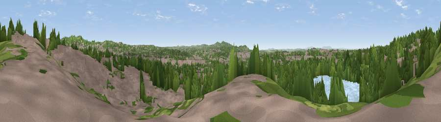

Viewpoint near Dudley Wood
#24537 in England · top 41% of its area beats it · near Dudley WoodWhere it is
The exact computed spot (SO 93975 87425). Click the marker for map links.
The view, rendered

A 360° render of this exact spot computed from the terrain model, tree cover and land cover — summer colours, afternoon light, calibrated against photographs of famous viewpoints. Real trees, hedges and buildings will differ in detail.
The panorama
Grey silhouette: terrain skyline in each direction (720 bearings, Earth curvature and refraction included). Dashed green: skyline with trees (+15 m) and buildings (+8 m) as obstacles. Blue strip: how far the ground is visible on each bearing.
Where the view opens
Wedge length = distance to the farthest visible ground on that bearing (vegetation-aware). Rings at 10, 25 and 50 km.
What fills the view
47% built-up · 36% woodland · 9% water · 7% grassland ·
Angular shares of the visible panorama (visual magnitude), not map area. Landscape diversity 0.51 (0–1 Shannon).
Key numbers
More beautiful places nearby
The staircase of upgrades: each row has a higher view potential than everything closer. Driving times are estimates from straight-line distance, calibrated against real road routing — check an actual route before setting out.
| Place | Direction | Drive | Score |
|---|---|---|---|
| Brierley Hill | WSW · 2 km | ~6 min | 49.8 |
| Viewpoint near Oakham | ENE · 3 km | ~7 min | 66.4 |
| Viewpoint near Oakham | ENE · 3 km | ~7 min | 68.8 |
| Viewpoint near Clent | S · 7 km | ~14 min | 73.8 |
| Viewpoint near Clent | S · 7 km | ~15 min | 74.3 |
| Knowle Hill | WSW · 25 km | ~41 min | 75.5 |
| Viewpoint near Abberley | SW · 27 km | ~43 min | 77.5 |
| Viewpoint near Abberley | SW · 28 km | ~44 min | 78.1 |
52.48471, -2.09015 · source: screening · position refined by local search. Computed location — check access rights before visiting.